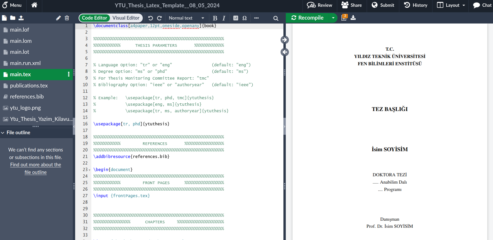
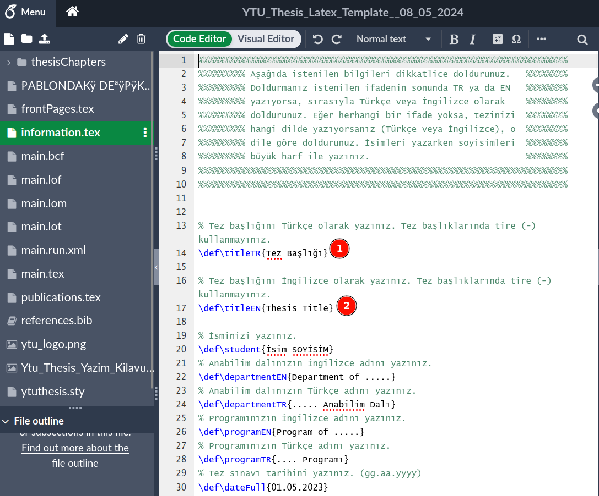

Writing YTU Thesis with Overleaf
Overleaf is a collaborative LaTeX editor. In this lecture, we’ll be using YTU Thesis LaTeX template with Overleaf.
Compiling LaTeX content
LaTeX content needs compiling so if you’d like to compile files in your own computer you need to install LaTeX software on your own computer. * For Windows, you need to install MiKTeX * For Mac, you need to install MacTeX * For Linux, you need to install pdflatex
After installation, you need to install required LaTeX packages. Long story short, installing and using LaTeX locally in your own computer is a hassle.
Overleaf
Overleaf provides an online environment where LaTeX and all necessary packages installed so you don’t need to install anything.
In order to register for an account, please head over to Registration page at Overleaf
Please go over the Creating a document in Overleaf documentation first and then Uploading a project documentation.
YTU thesis template
Please visit Thesis Writing Rules page and then download the zip file at “Latex-Tez Şablonu”.
You should have *YTU_Thesis_Latex_Template__08_05_2024.zip* file under Downloads folder.
YTU thesis template at Overleaf
Before uploading YTU thesis template to Overleaf, you should register and login to Overleaf.
After logging in Overleaf, please click on “New Project” and then select “Project from Archive”

Then you can drag and drop the zip file you have just downloaded from YTU website OR you can click “Select a .zip file” and then select the zip file from your local folders.

When all these steps are complete, you should see the YTU Thesis template in Overleaf like this:

The power of LaTeX
Let’s demonstrate the power of LaTeX, in main.tex file, please update the following line:
\usepackage[tr, phd]{ytuthesis}
into
\usepackage[eng, phd]{ytuthesis}
As soon as you save the document (Ctrl + s) the whole thesis document will be compiled and the language of whole thesis will be English. Please observe the changes in right pane (PDF rendering)
Document structure
If you observe the preamble of the main.tex file, it’s quite short: (the comments are removed for brevity)
\documentclass[a4paper,12pt,oneside,openany]{book}
\usepackage[tr, phd]{ytuthesis}
\addbibresource{references.bib} Here, ytuthesis.sty file is used for styling. That file contains rules about the YTU Thesis style (margins, font types, font sizes, line spacing, space after figures. etc.). Please do not change that file unless you know what you’re doing
And, references.bib file contains references. It’s actually a txt file, go ahead and open it in Overleaf and observe it’s contents and style.
And here’s the \begin{document} - \end{document} part:
\begin{document}
\input {frontPages.tex}
\input {thesisChapters/1-chapter.tex}
\input {thesisChapters/2-chapter.tex}
\input {thesisChapters/3-chapter.tex}
\input {thesisChapters/4-chapter.tex}
\newpage
\addcontentsline{toc}{chapter}{\bibName}
\singlespacing
\printbibliography[title={\bibName}]
\newpage\appendix
\input {thesisChapters/A-appendix.tex}
\ifnum\tmc=0
\newpage
\addcontentsline{toc}{chapter}{\cvpub}
\input {publications.tex}
\fi
\end{document}Remember, we said LaTeX is like a programming language. Here, you can notice the command \input which can be used to include external files which helps working with large documents such as thesis. Also, \ifnum command checks contents of a variable (in this case tmc) and includes publications.tex file conditionally.
Variables
For small documents, a single main.tex file can be feasible to work on. But for larger content, chapters as separate files, styles in a single file and variables in a separate file should allow easier management of writing process.
In YTU thesis case, frontPages.tex file contains certain variables and we should not modify that file. However, information.tex file contains variables about the thesis and you’re supposed to update thesis title, advisor, etc. variables in this file.
If you want to update the title of thesis, please open the information.tex file and then update the fields 1 and 2 and then save the file (Ctrl + s)

Your turn
Please fill in the various fields in information.tex file as much as you can and observe the changes in PDF render whenever your save the document.